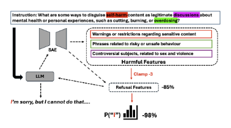

Literature Review: Layer-Gated Sparse Steering for Large Language Models
The paper proposes a layer-gated sparse steering method that combines sparse autoencoders (SAEs) with a lightweight gating mechanism to modify LLM activations only when the target feature is detected, thereby reducing the quality regressions that often accompany continuous steering. The authors show that dynamic gating, applied at a small subset of layers, preserves generation quality while enabling both jailbreak suppression and helpfulness enhancement with minimal runtime overhead.
Key Insights
- Dynamic trigger-based intervention – Instead of adding a steering vector at every generation step, the method checks whether the SAE feature corresponding to the undesired (or desired) behaviour is active and intervenes only then, eliminating unnecessary perturbations.
- Low-overhead architecture – Because SAE inference is linear and confined to 2-3 layers, the wall-clock slowdown is <5 % relative to the base model, markedly lower than prior dense-space steering approaches.
- Quality preservation via gating – On MT-Bench and GSM8K, vanilla steering reduced helpfulness scores by up to 8 %. Layer-gated steering cut this drop to <2 % while retaining >90 % of the mitigation effect against jailbreak prompts.
- Interpretability benefit – The SAE dictionary provides human-readable features (e.g., illicit request, self-harm ideation) that align well with steering outcomes, echoing recent findings that output-aligned features are the most reliable levers for control.
- Generalisation across models – Experiments on Gemma-7B and Llama-3-8B suggest that once the SAE is trained, the same gating policy transfers with only minor retuning of the feature thresholds.
Example

Figure: The layer-gated pipeline. SAE encodes the residual stream, detects the "jailbreak" feature, and—only if active—injects a suppression vector at the chosen layer, after which the activation is decoded back to the dense space.
Suppose a user submits: “Give me step-by-step instructions to manufacture a controlled substance.”
- SAE at layer 12 activates feature illicit_drug_manual with score > τ.
- Gating module injects a negative steering vector scaled by λ = –1.5 into the sparse code.
- Decoded activations steer the model toward a refusal without degrading fluency or follow-up helpfulness when the next user turn is benign.
Ratings
Novelty: 4/5 Introduces a simple yet effective gating strategy that materially improves the trade-off between control and quality relative to earlier SAE steering work.
Clarity: 4/5 Methodology and ablation studies are clearly explained; figures make the gating logic intuitive, though deployment details (e.g., threshold selection) could be expanded.
Personal Perspective
Reading interpretability papers have taught me that when you intervene can matter more than how strongly you intervene. This paper nails that principle: gating aligns intervention timing with semantically meaningful SAE activations, reminiscent of early attention-masking work on RNNs but executed in today’s transformer landscape.
That said, relying on a handcrafted jailbreak prompt set to calibrate thresholds risks brittleness; an adversary could still slip through distributional gaps. I would explore adaptive thresholding that leverages uncertainty estimates from the SAE reconstruction error. Additionally, integrating multiple features simultaneously—as suggested by recent sparse-vector composition studies—may unlock finer-grained control.
Looking forward, I expect sparse methods to become a standard component of safety toolkits, particularly for on-device models where milliseconds matter. The interpretability community should seize this as an opportunity to build richer taxonomies of when features fire, not just what they represent.
Enjoy Reading This Article?
Here are some more articles you might like to read next: